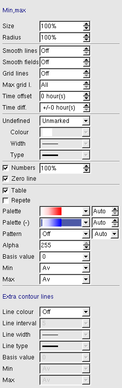

|  |
-
Min, max - choose whether to show L/H, C/W or value for extreme points in selected field.
-
Min, max size - size of marking (L/H, C/W).
-
Min, max radius - search radius, will change the number of L/H, C/W shown.
-
Grid lines in selected resolution (1=all) shows lines along constant x
and y axis.
-
Grid value - shows the grid values when zooming in.
-
Smooth lines - smoothes isolines by entering no. of extra points. Gives a
nicer look, when a small field-area is displayed.
-
Smooth fields - smoothes fields before they are displayed (for
wind-/vectorfields u and v are smoothed separately). No. of smoothing
operations is selected. Method: "Low-bandpass filter", which removes
short wavelengths ("noise").
-
Time offset is used to show fields with different times, the offset
is given in hours relatively to "valid time" (negative=earlier,
positive=later).
-
Time diff. shows the maximum allowed difference between chosen time
and field time. The field closest in time is always chosen.
-
Undefined - marks undefined/missing values in fields, e.g. land point in
wave model. Colour, line-thickness and -type can be selected.
-
Frame - plot a frame around the model
-
Zero-line - turn on/off the isoline with value=0
-
Numbers on isolines can be turned on/off, and the no.-size can be altered
(relative standard-size).
-
Table - annotation table on the map.
-
Repeat - the palette is cyclic.
-
Palette - change colour palette for selected fields. If "off" is
chosen, the field is not coloured. No. of colours in the palette can be
chosen and interpolation is done between the first and the last colour
"Auto" means the colours from the setup-file is used.
-
Palette (-) - Other colour palette under base value.
-
Pattern - the field is plotted with a pattern. If the colour is set to
"auto", the colour from the palette (or the line colour) is used.
-
Alpha value - transparency for selected fields.
-
Base value - sets the start point of isolines and
palette. (Used to get isolines -3, -1, 1, 3)
-
Min value - contour lines with values under min value are not displayed.
-
Max value - contour lines with values over max value are not displayed.
-
Extra contour lines - can be used e.g. to draw some contour lines with
thicker lines or in other colours.
-
Three colours - First colour used for values < basevalue,
second colour used for values = basevalue, third
colour used for values > base value
|